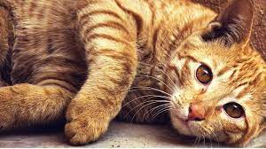
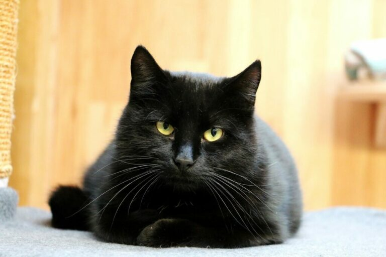
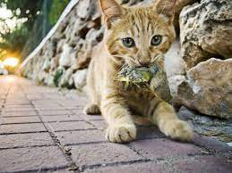
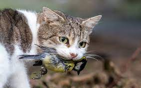

kleuren
Katten vind je in heel veel kleuren.
Je hebt rode katten zoals hier onder ook afgebeeld staat.

Zwarte katten zijn minder in trek bij de mensen , dit vanwege bijgeloof
wat er heerst.

eigenschappen
Katten zijn echte jagers!!

Ze vangen graag insecten, maar ook muizen en vogels hebben ze graag!
